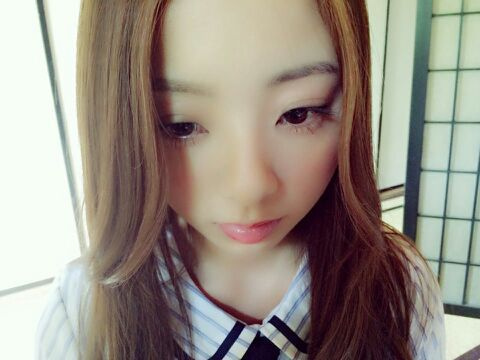

| 2014/06 04 Wed | 関西 girls styleにてアメ カジファッションの私、まいやん、なな せまるが載ってます。 Rotty |
こんにちわ。 ろってぃ−だよ*´`*

しょぼん。
わかってるんだ。
こうやったらいいああやったらいい。
でも 自分の思ってるようにできないのだ。
人生ってさ 大変なんだね。
でも まだまだ まだまだ ...
あきらめるのはまだ 早ーーーーい !!!!!!
皆〜？
それぞれ悩みは違うかもしれないけど
一緒に 頑張ろうね !!
メンタル メンタル メンタル
 Thank You
Thank You
楽屋は 「 ちーずーじょー」と一緒に居るんだけど、
ずっとずっと「あんたは メイクしなくていいんだよ! 」
「ぁあー ダメダメダメ... ライン引かなくていい 笑」
「ぁあー マスカラしなくていい 笑」
って言われ続けて１年、
ようやく昨日のプリンシパル
そして 一昨日やった乃木どこ収録で、
アイラインを薄い色で薄く引いて、
睫毛はマスカラ下地だけぬって、、、
って感じで薄く薄くと頑張ってみましたさ。
そしたら ヘアメイクさんにも全く同じことを言われて びっくりしました*´`*
「ろってぃ−は 元々が目鼻立ちしっかりしてるんだからメイクあまりしなくていいよ^^」って...
ぢゃあもうこうなったらスッピンで舞台に立とうかしら 笑
そりゃ 駄目だ。笑

・・・・・・・
あっ、 そうだそうだ 話かわるけれども ..*
「 関西 girls style 」とゆうファッション雑誌に( 私/まいやん/ななせ ) の３人で載っています

関東の本屋さんではおいてないの。
大阪住民の皆様 是非見かけたら買ってくださいね*^^*
地元の友達から
「 いつも見ている雑誌にまひろが載っててびっくりした〜、後、乃木どこ見たけど まひろの話し方はやっぱ不思議や〜*^^* 」 ってメールがきました♪笑
ではでは 今日も１日頑張りましょう ..*
大好きだよ？
のし..*
あっ ちーずーじょーメロまにって
ちはる、かずみ、あみ、かわご、まひろのことね //
コメント(204)
2014/06/04 11:24